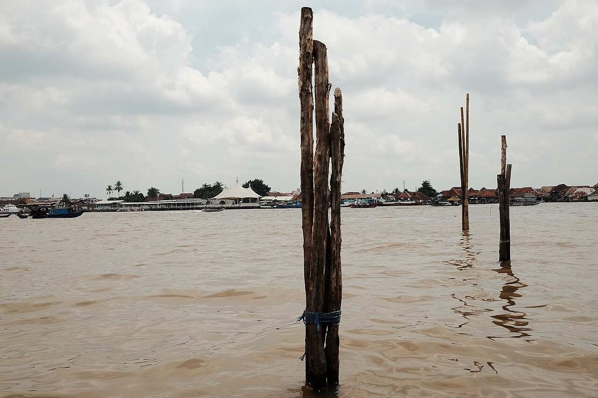

Palembang layak dikenal dengan cerita yang benar
Sriwijaya Culture membantu wisatawan dan masyarakat menemukan destinasi, usaha lokal, serta sejarah dan budaya kota secara bertanggung jawab.
Latar Belakang
Informasi lokal masih terpencar
Informasi perjalanan, sejarah, dan usaha lokal Palembang tersebar di berbagai sumber. Sebagian sumber juga mencantumkan angka tiket, jam, dan alamat yang tidak seragam. Pengunjung membutuhkan satu titik awal yang jelas, dengan keterangan bila suatu informasi masih perlu diperiksa.
Sriwijaya Culture dirancang sebagai proyek edukasi dan kompetisi untuk menyatukan catatan tersebut dalam halaman yang mudah dipakai dan memiliki rujukan.
Tujuan
Membantu orang mengenal kota dengan lebih dalam
Kami ingin wisatawan dapat merencanakan perjalanan, pelajar dan mahasiswa dapat menemukan rujukan awal, dan usaha lokal memiliki tempat untuk dikenalkan setelah informasi usaha diverifikasi bersama pemiliknya.
Visi & Misi
Informasi yang dapat dipercaya, mudah diakses
Visi
Menjadi titik awal digital bagi siapa pun yang ingin memahami pariwisata dan budaya Palembang.
Misi 1
Menyajikan informasi destinasi beserta akses, peta, dan sumber rujukan.
Misi 2
Mendokumentasikan artikel sejarah dan budaya yang membedakan fakta, interpretasi, dan legenda.
Misi 3
Mengenalkan UMKM lokal tanpa mengarang alamat, harga, nomor kontak, atau akun media sosial.
Misi 4
Membangun pengalaman yang nyaman di desktop maupun ponsel dan menghormati preferensi aksesibilitas.
Misi 5
Membuat seluruh fitur dapat digunakan tanpa akun server dan tanpa menyimpan data pengunjung secara daring.
Manfaat
Untuk pengunjung dan usaha lokal
Bagi wisatawan
- Menemukan destinasi berdasarkan nama dan kategori.
- Memahami konteks sejarah sebelum datang.
- Membuka peta dan rute melalui layanan peta daring.
- Mengetahui bila harga atau jam belum diverifikasi.
Bagi UMKM lokal
- Memperkenalkan kategori usaha dan produk unggulan.
- Memberi ruang bagi data kontak resmi setelah dikonfirmasi.
- Menghubungkan usaha dengan wisata budaya dan kawasan sekitar.
- Menjaga informasi harga dan ulasan tetap akurat.